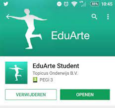

Eduarte
Algemeene info over Eduarte
Eduarte is het marktleidende onderwijs informatiesysteem voor het MBO. Eduarte is hét flexibele onderwijsinformatiesysteem voor meer dan 400.000 MBO studenten. Met Eduarte heeft u uw administratie op orde en wordt het management goed geïnformeerd met eenduidige en betrouwbare stuurinformatie.

Rooster
In het rooster van Canvas kan je zien op welke dagen en op welke tijdstip je les hebt. Je kan ook zien of je volgende week les hebt. Bovenaan kan je kiezen hoe je de rooster wilt zien. Als je op “lijst” klikt zie je de rooster van maandag tot en met vrijdag. Als je op “werkweek” klikt ziet u de rooster op een volledig scherm, dus zonder naar beneden te gaan. Als je op “week” klikt zie je ook zaterdag en zondag.

Cijfers
De reden voor waarom u op de afbeelding onderaan geen cijfers ziet is omdat de cijfers aan de eind van de periode op Eduarte wordt gelegd, maar wij zijn momenteel nog steeds in periode 1. Door filters kan je ook kijken naar cijfers van oudere periodes.

Aanwezigheid
Aanwezigheid is heel erg belangrijk in onze opleiding. Dus het is belangrijk om een goeie overzicht te hebben van wanneer en hoeveel je afwezig bent. Op “Overzicht” kan je kijken hoeveel je in een week of meer absent bent of present. Bij de andere twee zie je een meer specifieke groep.

De Eduarte app
Eduarte Student is de smartphone-app voor studenten die naast het studenten-portaal van Eduarte gebruikt kan worden.Met deze app kun je, ook als er even geen internetverbinding is, eenvoudig je gegevens inzien.
